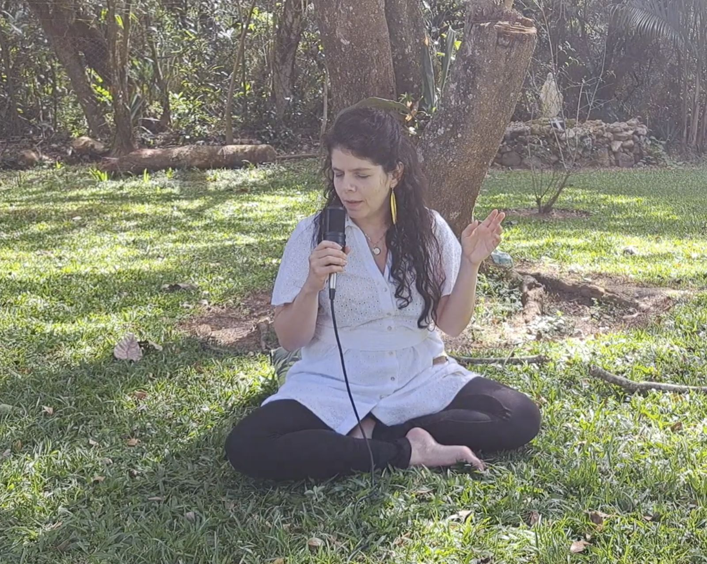
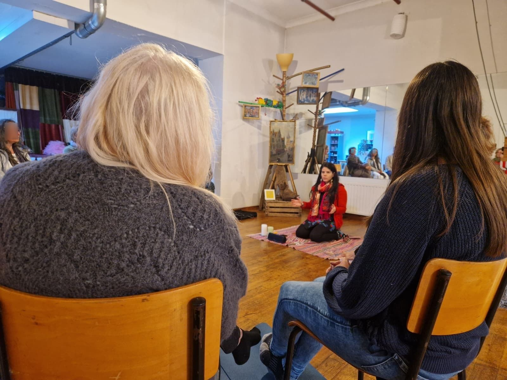
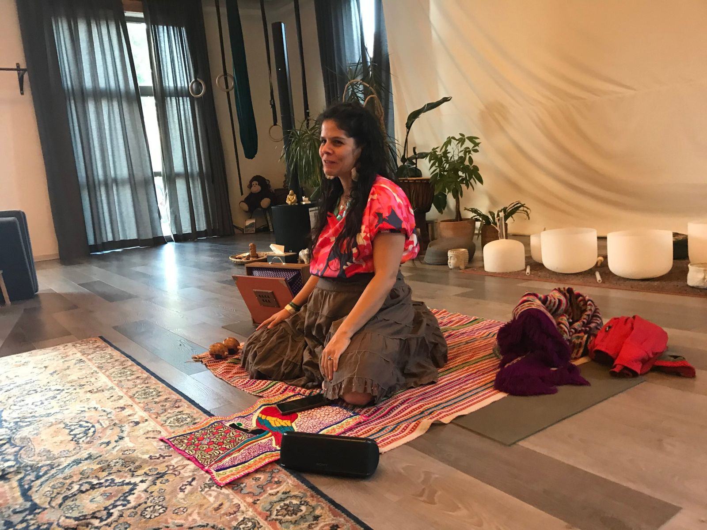
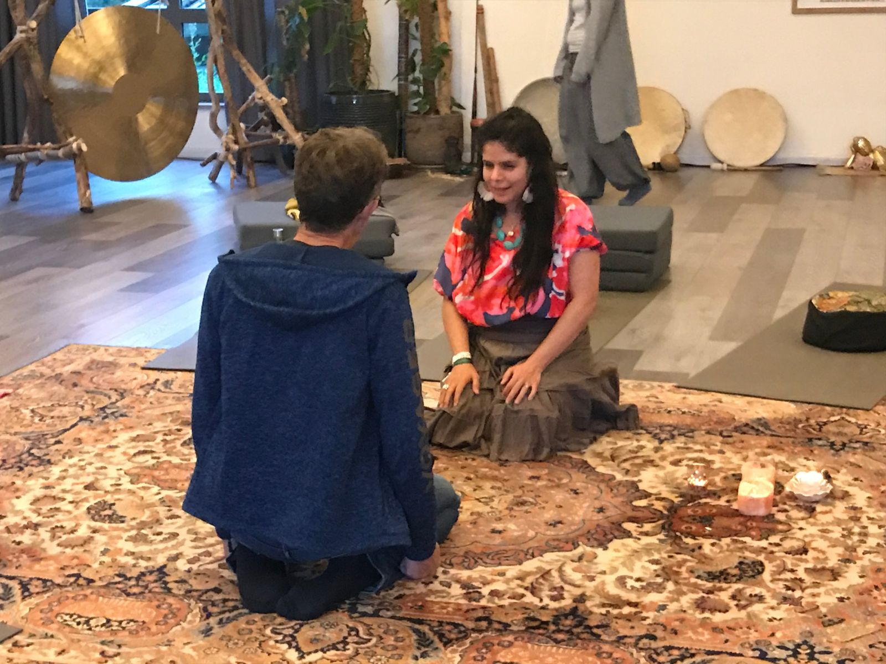
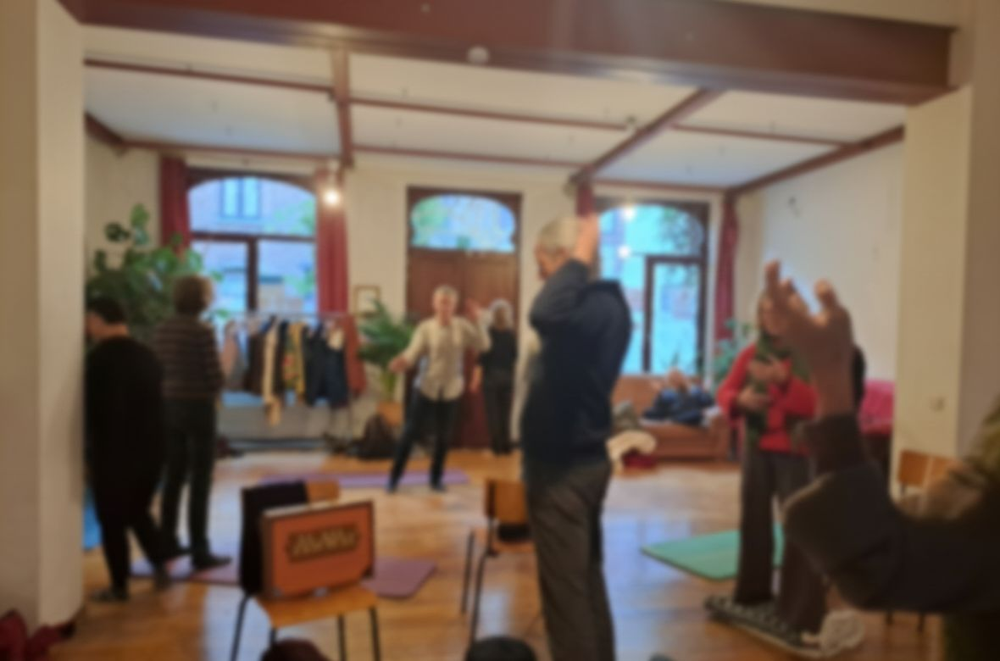
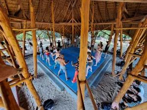

a school of inner knowing
Journeys into the inner worlds through voice, imagination and trance.
With Ariana Ramos, in Leuven, Belgium, and online.
An evening of intuitive singing and a guided inner journey, in Leuven on 7 December, one last time before I leave for the holidays.
We start by singing intuitively together. No experience needed and no "good voice" needed. We go from talking to sounding, until the voice becomes a resonant instrument of breath, bone and the space around us.
Then we use the voice to travel inward: a guided journey, lying down with eyes closed, letting the sound carry you somewhere inside. It's gentle, and if your body only wants to rest, that's fine too.
This evening is also the first door of Faro360, the school I'm opening. Come and feel whether this way of working is for you.

Dear traveller,
You are embarking on a journey through the road of mysteries and marvels, sorrows and grief, joy and love. The shaman is a bridge between the waking world and the world of dreams.
I call those who have asked the universe for guidance in the dream world. I call those who have begun to see and are called crazy. I call those who are lost and wish to find the depth of love. I call those who just know that there is more to life than just grinding away. I call those who struggle with the standard system. I call those who yearn for freedom from suffering. I call those who are courageous enough to live an authentic life. I call those who wish to serve even if they don't know how just yet. I call those yearning for a better future for humanity.
My soul chose this path for me before I chose it consciously for myself. My heart has been broken over and over on this path, my body has been broken and rebuilt, my personality destroyed and reformed. But I have had the amazing joy of beholding the immense mystery that cannot be described in words. I have felt the bliss of the river of infinity moving through my body. I am opening this space to share it with you, my dear traveller. I have had many teachers, each for a different part of the road. Here I offer the guidance I wish I had had, a helping hand to all those who already travel the path of dreams.
I was thinking of ways to make this easier for you, and realized that it would be a disservice to you to try to steer your experience, when the journey is about experiencing reality as it is. We will take it gradually so that you can grow and find your way safely through deeper states of mind.
Deep inner work can stir up difficult things, and in my experience rushing it can set you back for a long time. I say this not to cause fear, but to urge caution, and to take extreme self-responsibility. I write this to dissuade the fence-sitters, the dabblers, the half-way ins. This path is for the open-minded who wish to learn from experience, for those who have been reading everything they can get their hands on, for the dreamers who will carve their own paths. It is challenging and will require more out of you than you thought you had available. And it will give you the whole universe in return.
This path I am putting together is a mix of Daoist and shamanic practices, with some Buddhist influences in between. Several practices I have learned from traditional teachings, others I have discovered along the way. I have had several masters, some embodied and some intuitive. I expect it will be the same with you.
Most traditional schools will urge you not to mix their teachings with anything else. These are wise words for another era. In my opinion they are not well adapted to our day and age. We live in the era of information, and not making use of the wealth of information that we have at hand is a loss to our own paths. Beware though: that same wealth of information is a double-edged knife. We can get lost in too much, it becomes hard to discern true from false. Or we can get lost trying to do a little of everything without ever gaining depth.
We will start with developing your ability to feel the subtle aliveness inside your body, what Daoists call qi and yogis call prana, and to notice what affects it throughout the day. This is the base upon which you can safely experiment. The more you develop this inner intuition, the more you can take responsibility over your own cultivation.
We will then explore methods to access your subconscious awareness. We will ease our intent into trance through different techniques. I use intent alone. I will not teach using plant medicines, although I recognize that they have a place in modern-day shamanism. We will learn the old ways of shifting our state of consciousness through intent alone. We will build a vehicle to travel through the dreamscapes of the inner worlds, and to come safely back.
I will be guiding you, but you will be walking your own process, and it is up to you to help yourself. Any win is your win, any loss is your loss. I am but a witness in your process, and I am honoured to be so.
With love,
Faro
Twelve weeks to map your inner land: your past and present, your emotional home, your inner allies, and your first journeys between waking and dreaming.
Read my letter to the traveller. I guide you, but you walk your own process. Any win is your win. I'm a witness on your path, and honoured to be one.
| Founding price, for those who enrol before 12 December | €690 |
| Standard price | €990 |
| Or in three monthly payments | 3 × €330 |
A real traveller shouldn't be left out because of money. Each season I keep a few places on donation, starting at €200, with special care for students, pensioners and people without work. Write to me and tell me a little about your situation. No proof needed.
I'd like to startPart One, Dreaming the Land Within, builds the ground: your map, your home, your allies, your vehicle.
Part Two goes deeper: trance, and travelling the inner worlds beyond the land within. It is a separate course with its own fee, and it opens to those who complete Part One. For you, Part Two costs exactly what you paid for Part One. If you joined at the founding price or on donation, Part Two is the same. I'm telling you now so nothing comes as a surprise later. Part One is complete in itself, and you're free to stop there.
In-person weekends with other students will be offered now and then. They're optional, from €250 for the teaching. Food and lodging not included.

A single one-hour session: we talk a little, then I guide you on a journey with voice and imagination, shaped around what you bring. In Leuven, Belgium, or online. A journey costs €80 for one hour. If you enrol in Dreaming the Land Within within a month, the €80 comes off the course price.
In-person journeys in Leuven are available until 10 December 2026. Open afternoons:
Or write to me with the slot you'd like. From mid-December 2026 to mid-February 2027 journeys continue online, and in Leuven again from late February.
When I was a child, I spent hours singing to trees, birds, ants and rocks. It was the most natural thing in the world. Then I got schooled out of it. I couldn't memorize songs or sing the same thing twice, so I thought I couldn't sing. I forgot. I "grew up."
Years later I learned from shamans, scientists and meditators how to work with different states of consciousness. I found my way into trance, that space between waking and sleeping, and there my long-lost songs returned.
My path mixes Latin American and Siberian shamanic training, Boabom, and long silent meditation retreats in the Pa Auk tradition. By day I'm a data scientist and researcher. I study minds from the outside, and in this work I explore them from the inside.
Faro means lighthouse: well anchored, with a light that shines from within and reaches out across the dark to those who are looking for it. That's what I wish for everyone who walks this road.



Intuitive singing workshops in Belgium since 2025 · Movement workshops at Ozora Festival (3×)
For the evening, the course, a journey, or just a question.